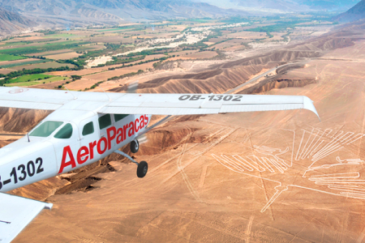
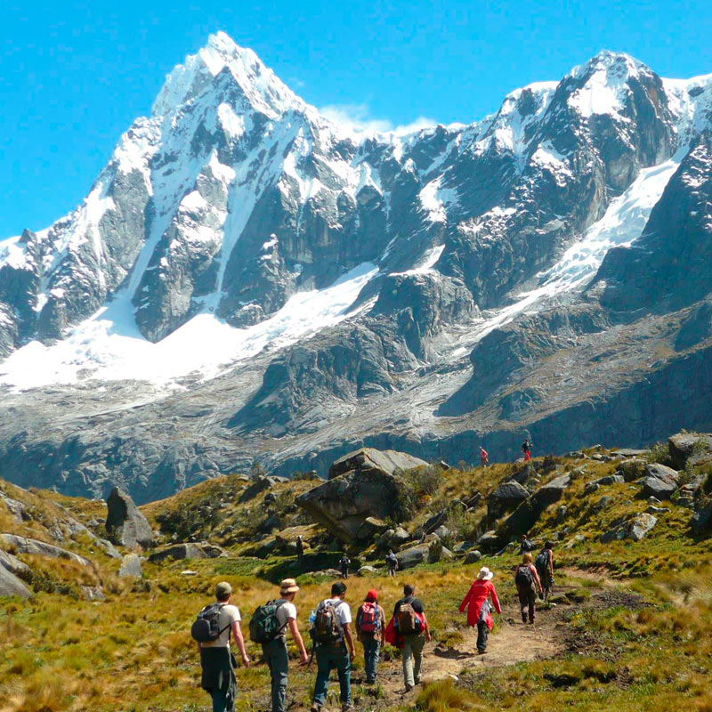
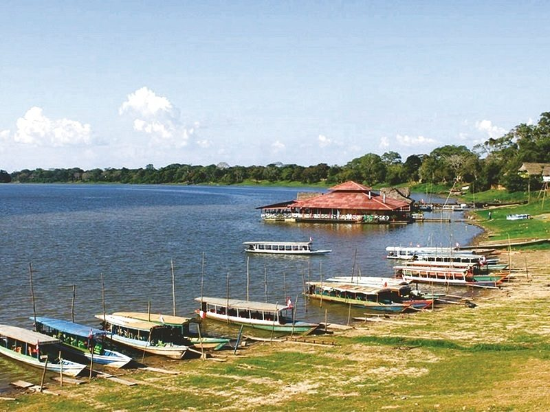
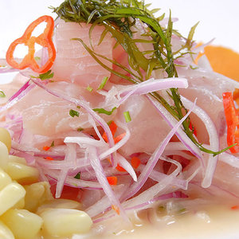

Descubre el Perú.
¿Quieres saber por qué visitar Perú?
La respuesta es sencilla y compleja, como el Perú mismo. Visitar Perú es ponerte en contacto con una cultura asombrosa, con gente capaz de mostrarte lo mejor de sí misma en cualquier circunstancia, con paisajes que generan emociones, con emociones que no se olvidan nunca.
Relájate con el frìo de la Sierra.
Zona montañosa dominada por la Cordillera de los Andes. Alcanza los 6.768 m.s.n.m. en la cumbre del Huascarán.
En la sierra del Perú se presentan dos estaciones climáticas bien definidas: una de estío, entre abril y octubre, caracterizada por días soleados, noches muy frías y ausencia de lluvias (la época ideal para recorrerla).
La selva te espera.
La extensa selva peruana, atravesada por el caudaloso río Amazonas, se puede dividir en dos zonas muy diferenciadas: la selva alta o ceja de montaña (sobre los 700 msnm) que posee un clima subtropical y templado, con abundantes lluvias (alrededor de 3.000 mm al año) entre noviembre y marzo y días soleados entre abril y octubre.
La mejor gastronomía del mundo.
La gastronomía del Perú es una de las más variadas y exquisitas del mundo, tanto que en el libro 357 listas para entender cómo somos los peruanos llega a contar hasta 491 platos típicos.